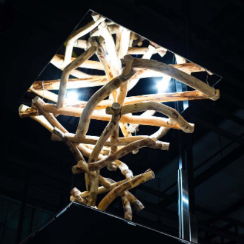
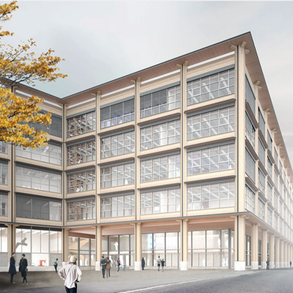
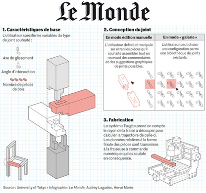

Other (non-peer-reviewed) writing:
Blog post
Updating the art of joinery for the 21st century
Medium, Oct 10, 2020
[Link]
Invited article
中銀カプセルタワーに住んでいた留学生から見た日本の生活 (JP)
English title: "Life in Japan as seen from a student from overseas who lived in the Nakagin Capsule Tower"
RE No. 184 / Building Maintenance and Management Center (BMMC), Oct 1, 2014
Grants & Awards
- 🆕 ACT-X [Math and Info], Acceleration Phase,
Japan Science and Technology Agency (JST), 2024
- KAKENHI Research Start-Up Grant, Japan Society for the Promotion of Science, 2023-2024
- Rising Star in Computer Graphics,
WiGRAPH (SIGGRAPH Community Group), 2022-2023
- ACT-X [Math and Info],
JST, 2021-2023
- Dr. Tech. Marcus Wallenberg Foundation Scholarship, 2012-2013
- Harvard Academic All-Ivy League Award, 2009

Exhibitions
-
🆕 Computational Joinery for Sustainable Construction, with Mercari R4D, Science Agora Exhibition,
Tokyo, 2024
-
Tsugite Joinery, Science Gallery,
The University of Tokyo, 2022-present
-
Tsugite Joinery,
WOOD CHANGE Exhibition,
Tokyo/Nagoya/Kyoto, 2020
-
Swirled Branches,
Digitally Natural - Naturally Digital,
Miraikan The National Museum of Emerging Science & Innovation,
Tokyo, 2019-present (pictured →)
- SXSW Interactive Show with
Todai To Texas,
Austin, 2018
- Master's thesis project exhibited at Lemon Exhibition at Meji University (Tokyo, 2014)
and featured in video for Centre Pompidou's Advances in Architectural Geometry (Paris, 2012)
Design Work

- Hardturm New Areal,
a football stadium building, Pool Architekten 2017
- Campus Biel/Bienne,
wood building, Pool Architekten, 2015-2017 (pictured →)
- Tokyo 2020 Olympic Stadium,
Zaha Hadid version, Nikken Sekkei, 2014-2015
- Design competition, Liljevalchs Art Gallery,
Kengo Kuma and Associates, 2014
- Kv Jacob, office building extension,
White Arkitekter, 2009-2010
Media

- 🆕 Bridging Continents: UNITE Flagship Researchers Forge New Partnerships in Japan,
Research Council of Finland, Blog post, 2024-12-12
- 🆕 SIGGRAPH Asia 2024 branding design (JP),
Takram Blog post, 2024-01-01
- Doctoral Dissertation Summary (JP),
Recommended Doctoral Dissertation Bulletin, Information Processing Society Japan (IPSJ), 2023-08-15
-
Swedish Wood Magazine Trä (pp. 34-35), 2021-12-01
-
Designboom, 2021-04-13
-
ITmedia News, 2021-04-08
-
Le Monde, 2020-11-11 (pictured →)
-
Tech Breifs, 2020-10-30
- Hackaday, 2020-10-23
- SciTechDaily, 2020-10-21